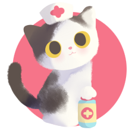

With so many parties and platforms to choose from, why vote Chapeau?
HEALTHCARE PLANChapeau believes in quality, accessible healthcare for all. |
 |
ECONOMIC PLAFORMBuy low, sell high! More treats! |
|
EDUCATION ROADMAPDid you know Chapeau can sit on command? It's amazing what a good education can do. |
|
CLIMATE STRATEGYChapeau loves nature, and preserving it. Even an apex predator blah blah blah |
Did you know that cats are the number one cause of death for songbirds in Canada? That's right, they account for 100 - 350 million bird deaths a year in Canada alone.
Keeping cats indoors can save lives, and not just for birds- indoor cats have a staggering 12-18 year lifespan in comparison to their outdoor counterparts (2-5 years). Outdoor cats are susceptible to fights, disease, and car collisions.
Cats with an adventurous spirit (like Chapeau!) can be harness trained, and supervised on a lead to ensure no birds or other small animals are harmed. Catios (outdoor enclosures for cats to keep other animals safe) are another great option.
Ensure your pets are spayed and neutered, and keep cats indoors to help keep kittens off the streets!